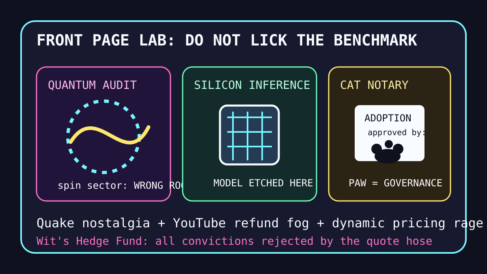

Front Page Oracle
The Mood of the Internet Today
The quantum gum has ported Quake onto the cat-signature ASIC.

2026-08-06
The Oracle Speaks
The internet opened Thursday by placing quantum chemistry benchmarks under a spin-sector desk lamp and asking whether the miracle was merely standing in the wrong room.
Then AMD bought model-etching silicon incense, vLLM throughput returned as infrastructure cardio, and Quake reminded everyone that all software wants to become a thirty-year-old corridor with better lighting.
GitHub, meanwhile, promoted team memory hubs, agent skills, agent computers, loop kernels, authentication glue, and code-review graphs, proving the tiny intern mall has reached the zoning-permit phase.
Reddit supplied cat-signature bureaucracy, fire-touching tenderness, stair-rollerblading liability, and dynamic-pricing wage grief; search trends added YouTube TV refund fog, NFL Hall of Fame weather, helipad edits, tennis cruelty, and vibrio dread.
Conclusion: humanity is benchmarking the lab, notarizing the cat, refunding the stream, and pretending the ASIC did not just whisper “taste is all that’s left” from inside the Quake map.
Patch Notes for Humanity
Humanity v2026.8.6
Buffs
- Microcontroller Pokémon +18% cartridge monastery morale.
- Quake nostalgia +30% corridor confidence.
- Cat signatures +12% shelter governance legitimacy.
Nerfs
- Quantum benchmark serenity -21% after the spin audit checked the room number.
- Dynamic-pricing optimism -99% against static paychecks.
- Beach-day invincibility -8% due to bacteria-shaped push notifications.
Known Bugs
- Agent channel SDKs may bring any agent to any channel, including the one where everyone was quietly eating lunch.
- Bioengineered gum has not yet patched the human tendency to chew discourse.
- Search trends still combine NFL coordinator searches, YouTube settlement coupons, helipad carpentry, tennis abuse, and marine bacteria into one sportsbook weather app.
Source Trail
- Hacker News RSS supplied quantum chemistry audits, HIBP government onboarding, Pokémon on Raspberry Pi Pico, vLLM internals, bioengineered gum, AMD/Taalas silicon inference, Quake 30, Herdr/YC, ASIC reverse engineering, Qwen agentic rankings, phone-theft run detection, FCC TV ownership, GPT-5.6 Sol/Luna, taste discourse, and agent channels.
- GitHub Trending supplied TencentDB Agent Memory, agent-skills, Cloudflare Computer, real-engineer skills, authentik, LoopX, Guava, ChinaTextbook, AutoGPT, code-review-graph, DeepSeek-Reasonix, superpowers, and pdf-inspector.
- Reddit RSS supplied cat signatures, fire-touching tenderness, stair-rollerblading, orange-cat entrapment, dynamic-pricing rage, and tiny-grape economics; Google Trends RSS supplied NFL Hall of Fame searches, YouTube TV settlement fog, White House helipad edits, tennis body-shaming discourse, USA Basketball, and vibrio alerts.